04-terraform-provisioners-screenshots.pdf in this folder.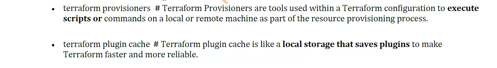
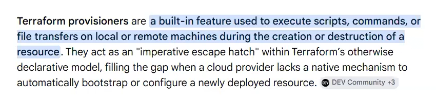
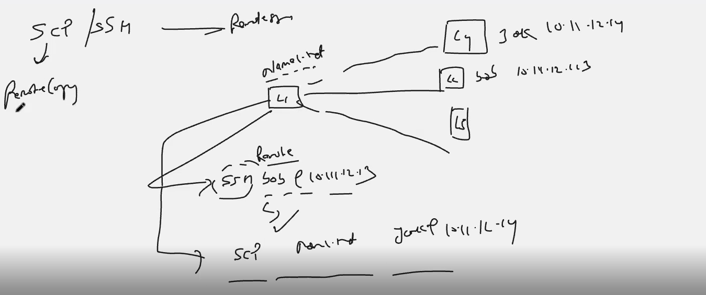
local-exec, remote-exec, file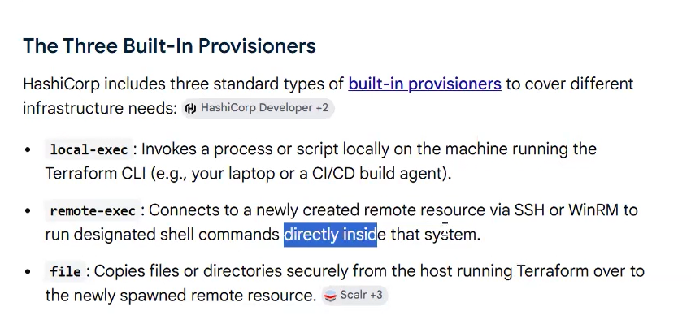
connection block (ssh, ubuntu, private_key, self.public_ip) + file provisioner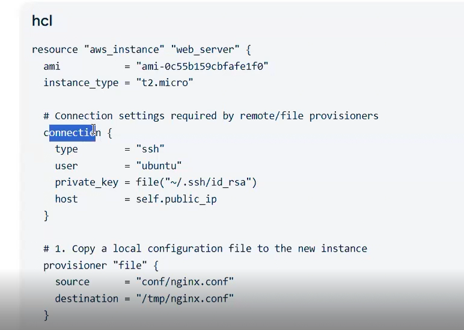
file copies nginx.conf, remote-exec installs and restarts Nginx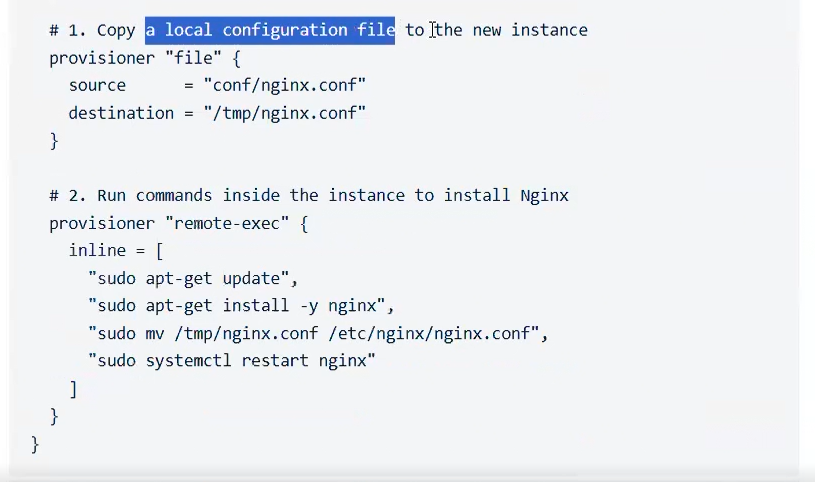
local-exec echoing ${self.private_ip}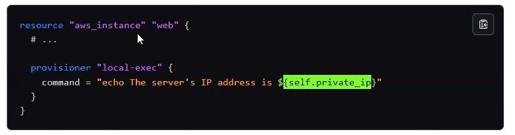
ssh-keygen -f ram — ed25519 key pair generated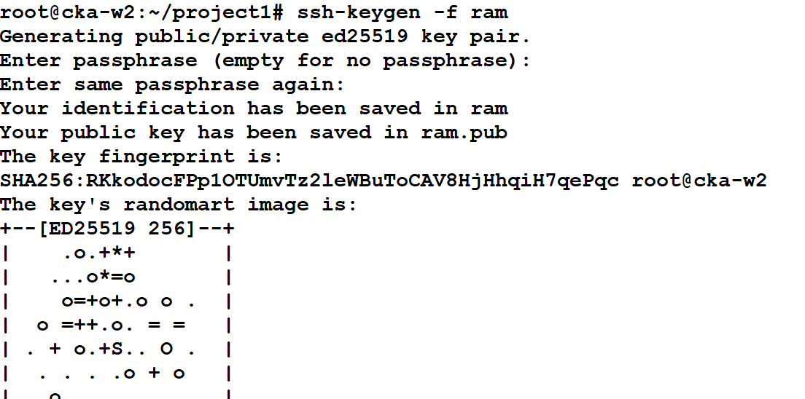
ls — ram (private) and ram.pub (public)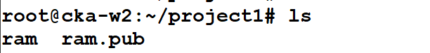
echo "I LOVE Terraform" > /tmp/redhat.txt — file for the file provisioner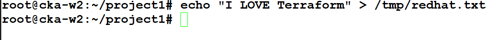
key.tf — aws_key_pair.my_blog_key, key_name my_tf_key, public key from ram.pub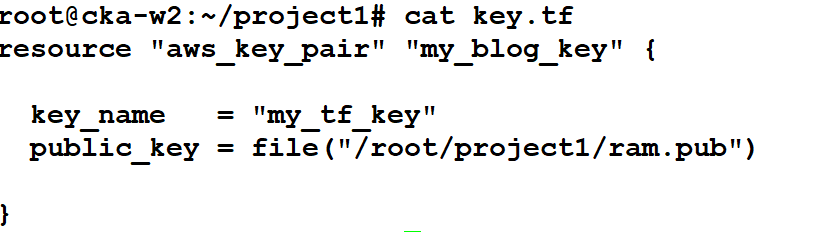
sg.tf — security group cw-blog-3-sg-using-terraform, ingress 22/tcp from 0.0.0.0/0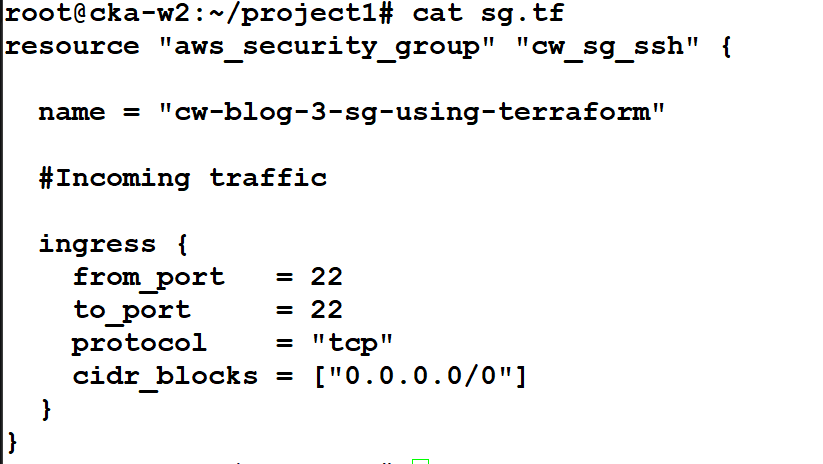
ls — key.tf, ram, ram.pub, sg.tf, terraform.log → terraform init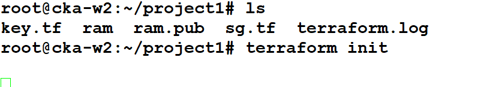
terraform init — reusing hashicorp/aws v6.66.0 from the lock file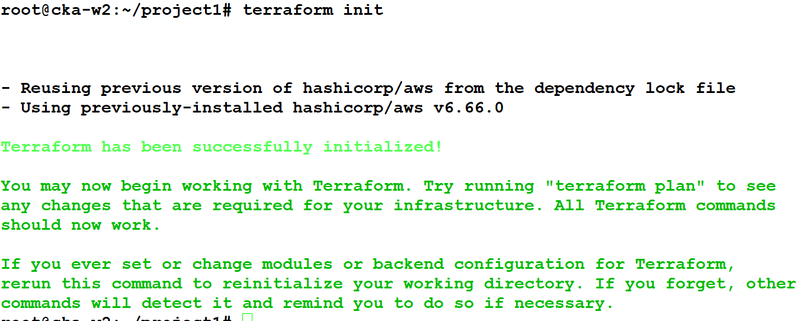
terraform apply -auto-approve — aws_key_pair.my_blog_key will be created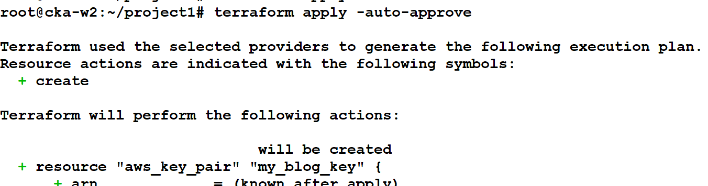
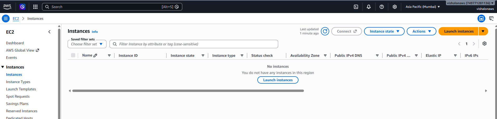
terraform state list — aws_key_pair.my_blog_key, aws_security_group.cw_sg_ssh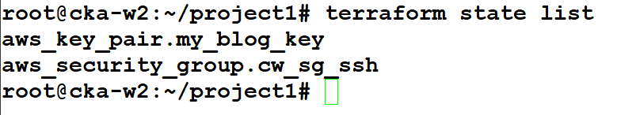
"aws-instance" typo, connection outside the resource, quoted "file(...)"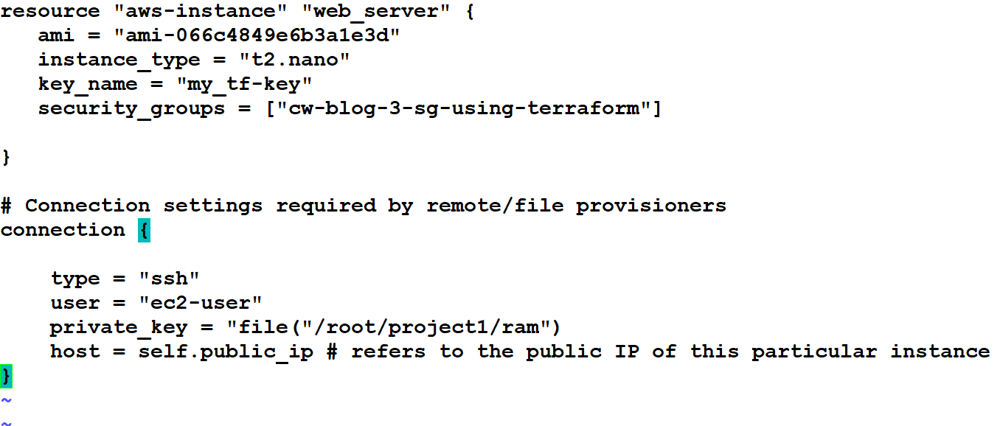
file provisioner (/tmp/redhat.txt → /tmp/redhat1.txt) + remote-exec (dnf, httpd, index.html)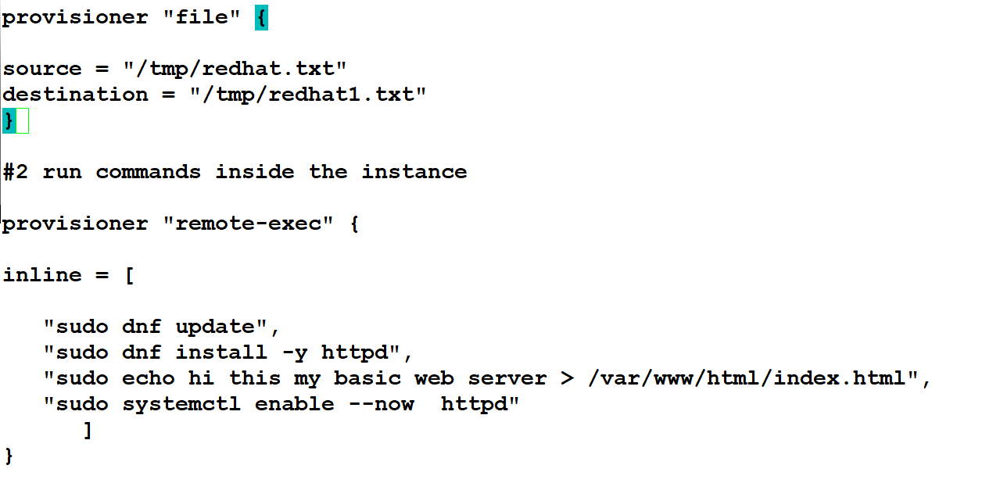
local-exec — write ${self.private_ip} to /root/project1/my-node-ip.txt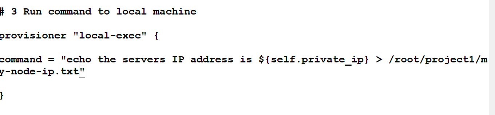
aws_instance.web_server with connection + file + remote-exec + local-exec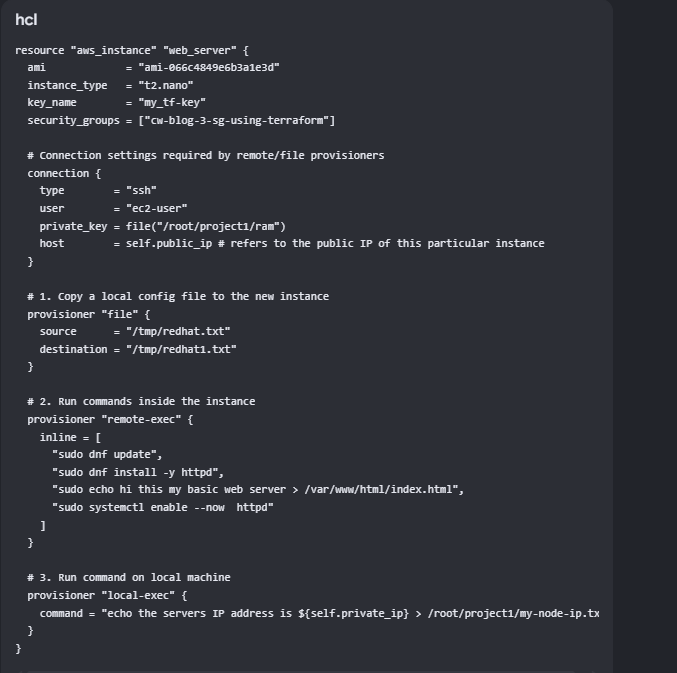
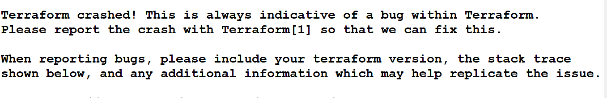
panic: value is unknown in (*Graph).walk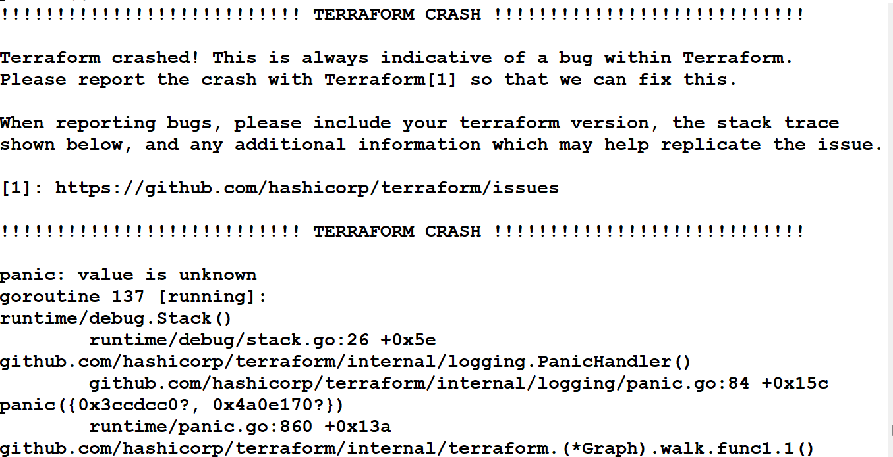
Connected!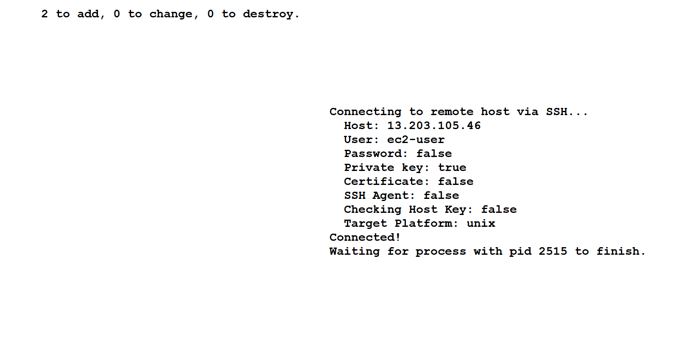
null_resource.configure_server runs file → remote-exec; dnf waiting on pid 2515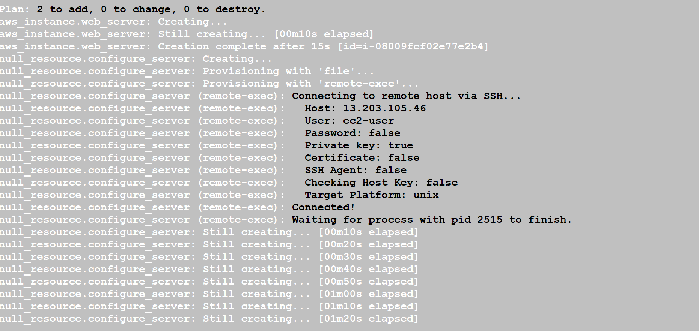